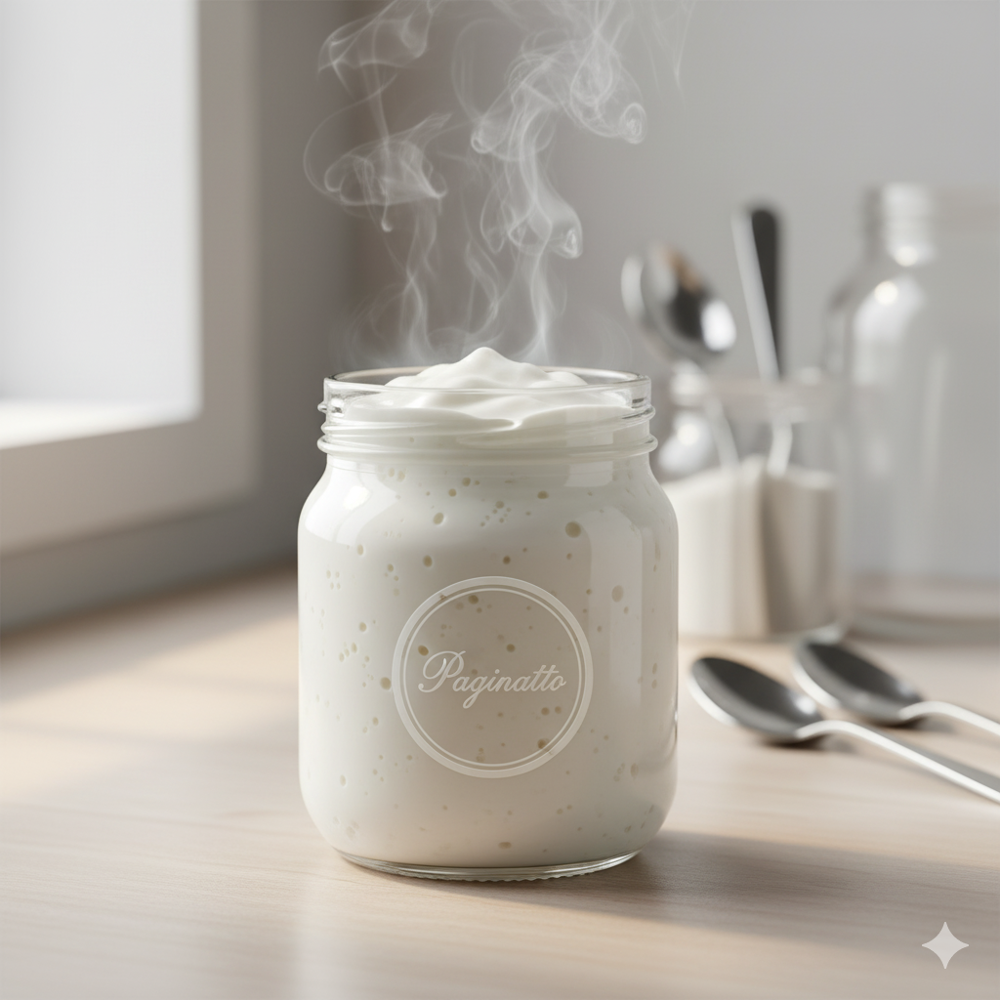
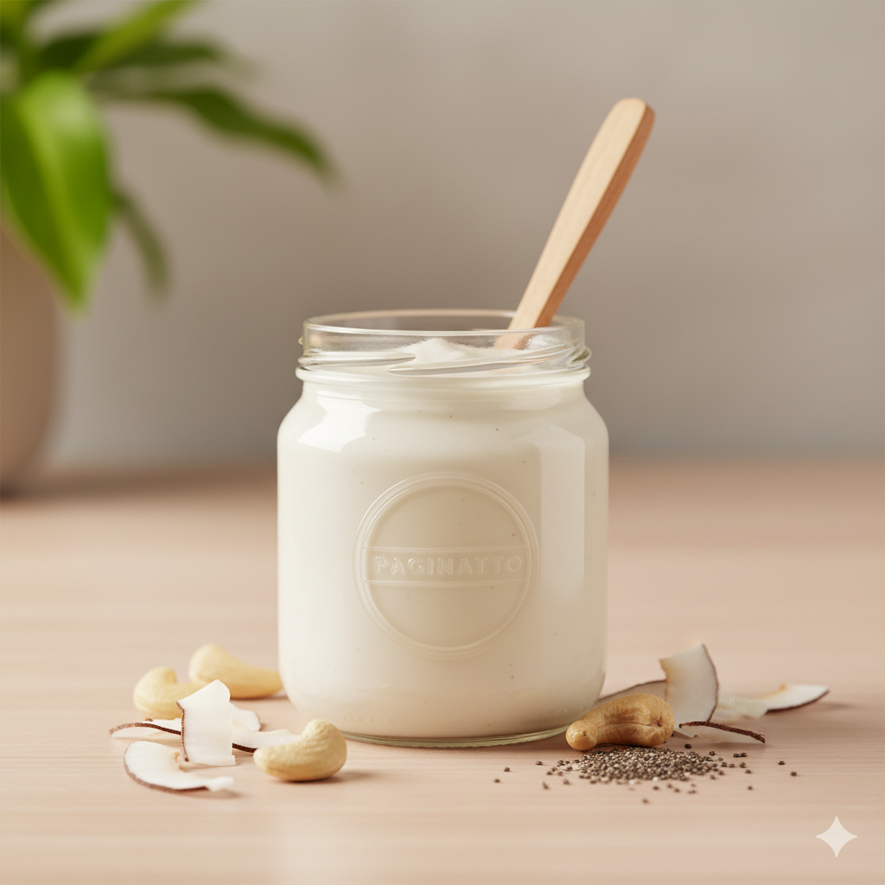
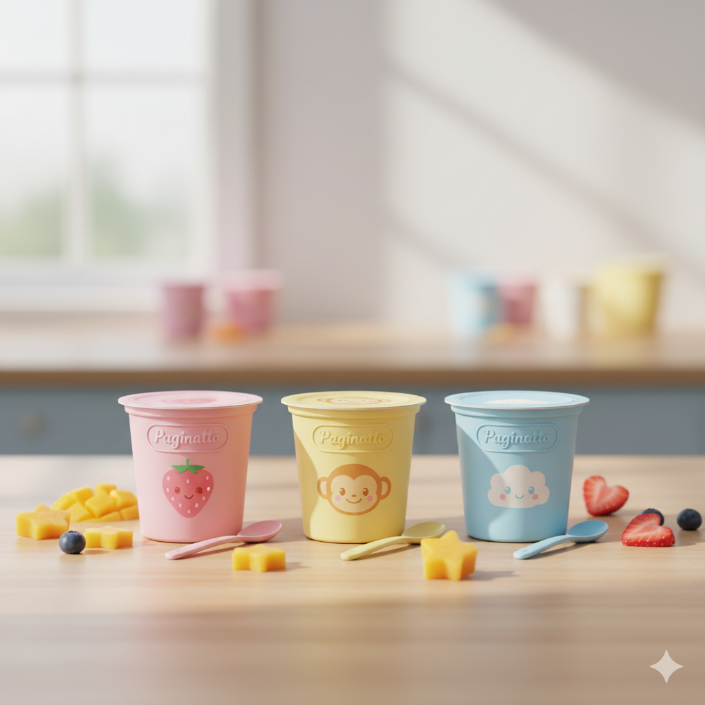

Categorias
Explore o mundo do iogurte artesanal.
E-book Exclusivo
Baixe agora e descubra segredos de grandes chefs!
Clique aqui para acessar seu Ebook.png)
Com Frutas
Iogurtes com pedaços e caldas naturais.

Probióticos
Fermentos e técnicas de cultivo saudável.

Grego
Cremoso, intenso e irresistível.

Vegano
Alternativas com leites vegetais.

Infantil
Receitas suaves e nutritivas para crianças.
🔒 Liberada dia 16/11 às 18:00